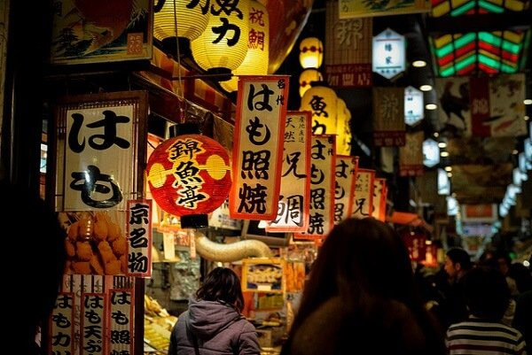

Autrefois capitale du Japon, Kyoto est aujourd'hui entrée dans le panthéon. Ville sanctuaire aux traits traditionnels, elle incarne le portrait d'un pays riche en histoire et en patrimoine. A elle seule, Kyoto renferme les plus fabuleux trésors du pays classés au patrimoine mondial de l'UNESCO. Près de 2000 temples (dont les non moins connus Kinkaku-ji et Higashi Hongan-ji) et plus de 200 jardins habillent cette destination à la beauté stupéfiante. Ville à la jeunesse éternelle, Kyoto a su préserver une authenticité presque divinatoire tout en se modernisant, entre urbanisme et industrie.
Visiter Kyoto : quelles sont les meilleures choses à faire et voir dans l’ancienne capitale du Japon ?
Il y a tellement de choses à faire à Kyoto qu’il faudrait un mois simplement pour en voir les attractions et activités les plus intéressantes. Cette ville fut la capitale impériale du Japon de 794 à 1868 et elle est mondialement célèbre pour avoir accueilli la conférence du protocole de Kyoto visant à la réduction des émissions de gaz à effet de serre. Les raisons de la visiter sont multiples : voici une liste d’idées de choses à voir lors de votre séjour à Kyoto !
1. Découverte des temples de Kyoto
Il y a plus de 1 600 temples à Kyoto, alors faire un choix sera pour vous une tâche intimidante si vous ne voyagez dans cette ville que quelques jours. Les temples que vous ne devez absolument pas manquer sont les suivants (mais vous en trouverez de nombreux autres au cours de votre séjour). Cliquez sur les liens pour voir où ils se trouvent sur Google Map.
Le célèbre « Pavillon d’or « , est le site le plus emblématique de Kyoto. Essayez de choisir un moment où les foules de touristes ne sont pas là pour aller voir ce magnifique temple. Son toit enneigé en hiver ou son environnement très vert en été lui donne toujours une belle allure. Son reflet dans l’eau est magique. La construction actuelle recouverte de feuilles d’or a été inaugurée en 1955, cinq ans après que le temple original du 14ème siècle fut incendié par un des moines du temple.
2. Le quartier Gion et ses geishas
Ce n’est pas le seul quartier de geisha encore existant au Japon, mais Gion, un ensemble de rues définies par ses vieux bâtiments en bois, salons de thé et restaurants locaux, est de loin le plus célèbre. Passez une heure à flâner dans le quartier et vous aurez des chances d’apercevoir une geisha ou deux passer avec leurs lourdes sandales zori et leur joli kimono. Mais Gion n’est pas fait que pour voir les geishas. Chaque mois de juillet, leurs charmes sont éclipsés par le Gion Matsuri , un festival qui attire plus d’un million de visiteurs pour son défilé de chars et des spectacles musicaux traditionnels.
4. Obtenir une vue panoramique depuis la Tour de Kyoto
Du haut de ses 131 mètres, la tour de Kyoto est impressionnante car elle a été construite (en 1964) sur le toit d’un immeuble. Elle vous offre une vue à 360° au dessus de Kyoto pour 770 yens (5,50€).
5. Arriver en Shinkansen dans la gare futuriste
En face de la Tour de Kyoto se trouve la gare. C’est ici qu’arrive le fameux train à grande vitesse Shinkansen. La gare est à voir car son architecture est impressionnante et elle sert également de centre commercial.
6. Goûter aux spécialités du marché Nishiki

Le marché Nishiki est de loin le meilleur marché pour manger de Kyoto. Vous y trouverez tous les principaux ingrédients de la cuisine traditionnelle locale : tsukemono (cornichons japonais), tofu frais, Kyo-yasai (légumes de Kyoto), wagashi (des bonbons japonais), du thé, du poisson frais et des crustacés. Certains magasins vendent de la nourriture à emporter comme les brochettes de yakitori ou sashimi, et quelques restaurants avec des tables pour s’asseoir se trouvent au cœur des boutiques. Nishiki est aussi un bon centre commercial avec beaucoup de souvenirs traditionnels proposés.
7. S’imprégner de la zénitude des nombreux jardins
Les temples listés plus haut sont entourés de jardins où il est idéal de se promener. Vous devriez également découvrir ceux des villas impériales Katsura et Shugakuin , ou encore le jardin Sento Gosho au sein du Palais impérial de Kyōto.
8. Visiter le Musée international du manga de Kyōto
Les fans de mangas pourront se rendre dans un autre sanctuaire de Kyoto, mais très différent de ceux présentés plus haut dans l’article… Le musée présente une collection de quelques 300 000 BD, et des expositions liées aux mangas. Rendez-vous sur le site officiel (version française) pour en savoir plus.
9. Et tout ce dont Kyoto a à vous offrir
Oui, la liste est longue, comme je l’ai indiqué dans l’intro. Vous pouvez aller faire des randonnées (voire pèlerinages) vers les différents sanctuaires et temples de la ville, souvent disposés sur des collines. De nombreuses choses sont à découvrir dans vos assiettes, vous devriez sincèrement écumer les restaurants même si cela vous reviendra cher à force. Essayez notamment le quartier Ponto-chō. Aussi, n’hésitez pas à louer un vélo qui est un moyen agréable de visiter cette ville elle aussi … agréable.